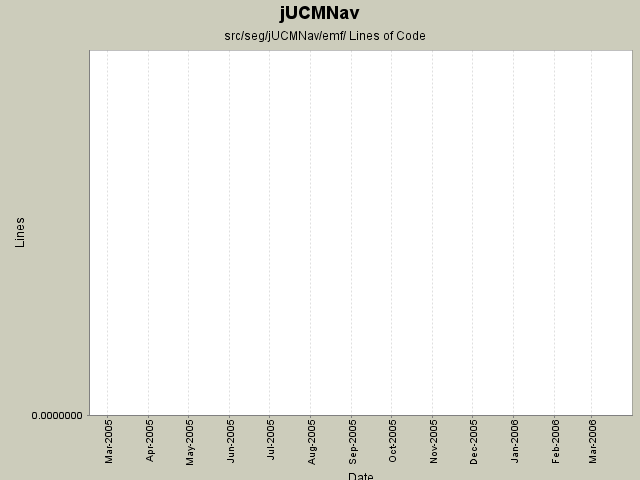

Summary Period: 2005-02-22 to 2006-03-23

Total Lines Of Code:
0 (2006-03-31 18:01)
| Author | Changes | Lines of Code | Lines per Change |
|---|---|---|---|
| Totals | 90 (100.0%) | 0 (-) | 0.0 |
| jkealey | 17 (18.9%) | 0 (-) | 0.0 |
| jfroy | 30 (33.3%) | 0 (-) | 0.0 |
| etremblay | 43 (47.8%) | 0 (-) | 0.0 |
Created command test cases for GRL
Fixed bug when saving Evaluation and LinkRef
0 lines of code changed in:
Fixed error with private/protected association (does not affect the code)
0 lines of code changed in:
Fix the URNlink to support multiple links type. Modification of the links display in UCM
0 lines of code changed in:
Added URNlink dialog, actions and commands
0 lines of code changed in:
Ended name change.
0 lines of code changed in:
Name change for EvaluationScenario (now called Strategy)
0 lines of code changed in:
Added actor evaluation level.
Fixed bug when entering non integer for evaluation level
0 lines of code changed in:
Added:
-Delete commands for scenario and evaluation
-Delete action for evaluation
Fixed:
-NullPointer exception with scenarioView (in property view)
-Adding new elements in model when in scenario view
-Contribution and decomposition refresh
-Dispose labels in IntentionalElementEditPart and LinkRefEditPart
0 lines of code changed in:
Added scenario author, color modification when scenario selected and fixed NullPointerException in Scenario view when closing the editor.
0 lines of code changed in:
Evaluation scenario view added.
0 lines of code changed in:
Merge of GRL branch with the main trunk
0 lines of code changed in:
Merge grl branch with the main trunk
Major modification of the metamodel (URN_08.mdl) (Added GRL metamodel, New interfaces that define common element in GRL and UCM, Modified UCM-Map package to implement the new interfaces (some associations and attributes have been refactored using the interfaces), Map is now called UCMmap (to resolve conflict with java.util.map in the implementation), Removed Path Graph)
Modification of the code that used the metamodel.
Started modification of jUCMNav to support GRL.
0 lines of code changed in:
regenerated the EMF code using EMF 2.1; slight changes; doesn't seem to have affected anything
0 lines of code changed in:
Upgraded meta-model to version 7.
bug 193 - ReqElemStartPointAttributes
properties view shows workload attribute as a nested attribute (instead of original dialog box proposal)
properties view doesn't refresh its descriptors every time you change a property. (property descriptors are properly cached by implementing the PropertyID class with hashCode and equals that work better than Object[]'s)
0 lines of code changed in:
The new meta model was generated in the code.
The start, empty and end point are not in the palette anymore. Use the path tool to create them from now on.
Deleted the marquee in the palette since the selection tool do the same thing...
0 lines of code changed in:
Refactored a lot of packages to better reflect our strategy for the future.
Corrected some bugs to follow some guidelines we defined earlier.
Extracted the RessourceTracker class from UCMEditor.
0 lines of code changed in:
* Created General Test Suite that will run all smaller ones; this test suite should be run by cruisecontrol
* Refactored ModelCreationFactory to allow static use
* Cleaned CreatePathCommand ; now extends JUCMNavCommand and no longer references Draw2D
* Created a test case for it.
* Removed CreatePathNodeCommand which wasn't used.
0 lines of code changed in:
first attempts at autogenerated junit tests.
the code committed here will probably break the compiler; eclipse must be updated as stated here:
http://www.cis.upenn.edu/~matuszek/cit594-2004/Pages/eclipse-faq.html
0 lines of code changed in:
worked on bug 184; top level element is now URNspec; will break existing files.
perfected a few issues concerning components; are now subsets of URNspec
fixed a bug concerning the label's addaction that caused an error to be thrown when clicking outside the editor
0 lines of code changed in:
bug 133
- shows feedback that can't resize/move if fixed.
- we're creating componentrefs and components now
- can color components (line/fill)
- reorder creation order creating the smallest (area) last so they aren't
hidden by other components.
- property view improved to handle colors/references
- can return to default color by using the "return to default" button
bugs / todo:
- components should be under paths, which are under pathnodes
- must add property dialog to pick from existing components
- should refactor the property page creator so that it works with responsibilities as well.
0 lines of code changed in:
(10 more)
Generated by StatCVS 0.2.4